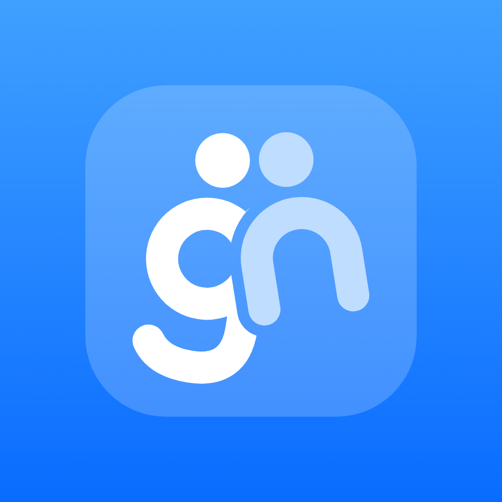

Privacy Policy
Last updated: October 28, 2026
GN (“we”) is an app for making plans with friends and family. GN is run by Damir Raikhan, Almaty, Kazakhstan. If you have any questions, write to gnappinfo@gmail.com.
In short: we collect only what GN needs to work. We don't show ads, we don't track you across other apps or websites, and we never sell your data.
What we collect
- Your account. When you sign in with Google or Apple, we receive your email address and an account ID from them. Google also shares your name, which GN only uses to suggest a name when you sign up.
- Your profile. Your @nickname, your name, and the emoji or photo you choose.
- What you create. Your friends, groups and categories; plans and their notes, times and places; your answers and suggestions; tasks, bill splits and “On my way / I'm here / Home safe” updates; and photos or files you add to a plan.
- Notifications. If you allow notifications, a code from Apple that lets us send them to your phone.
- Server logs. Our hosting provider keeps short-lived technical logs, such as IP addresses and error messages, to keep the service running and secure.
What stays on your phone
- Contacts. If you let GN look at your contacts to find friends, the matching happens on your phone. Your contacts are not uploaded.
- Calendar. If you allow it, GN adds plans you accept to your calendar. We don't read your other events.
- Clipboard. When you come back to GN, it checks whether you just copied a map link so it can offer to add the place. The clipboard isn't stored or sent anywhere.
- Reminders and your theme setting.
GN doesn't use your device's location. Places in plans are only the ones you choose.
Why we use it
Only to run GN: to sign you in, show your profile to friends, send and show invites, keep everyone in a plan up to date, and keep the service secure. We don't use your data for advertising or profiling.
Who can see what
- Your nickname, name and picture can be seen by people you're friends with or share a plan with, and by anyone who searches for your nickname (unless you turn off being found by search).
- A plan, its details and answers are only visible to the people in it.
- If you share your busy times, friends see only that you're busy, never what you're doing.
- Your groups and what you named them are only visible to you.
Services we use
- Supabase stores the data on servers in the Asia-Pacific region. Data is encrypted while it travels and while it's stored.
- Google and Apple handle signing in. Apple also delivers notifications.
These companies process data only to provide their service to us. Because the servers are outside Kazakhstan, your data is transferred abroad. By using GN, you consent to this.
How long we keep it
We keep your data while you have an account. You can delete your account at any time in GN: Settings → Delete account. This permanently removes your account, profile, friends, groups and the plans you host. Your answers and messages in other people's plans are removed too. Server logs are deleted by our hosting provider on their normal schedule.
Your rights
You can see and change your profile in GN at any time. You can also ask us for a copy of your data, or to correct or delete it, by writing to gnappinfo@gmail.com. We'll answer within 30 days.
Children
GN is not meant for anyone under 16. We don't knowingly collect data from children. If you think a child has signed up, write to us and we'll delete the account.
Changes
If we change this policy, we'll update the date at the top. If a change is important, we'll also tell you in the app.